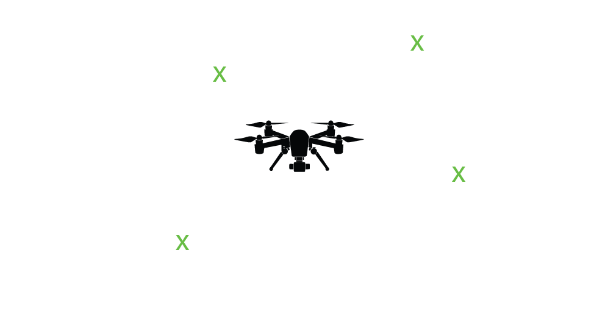
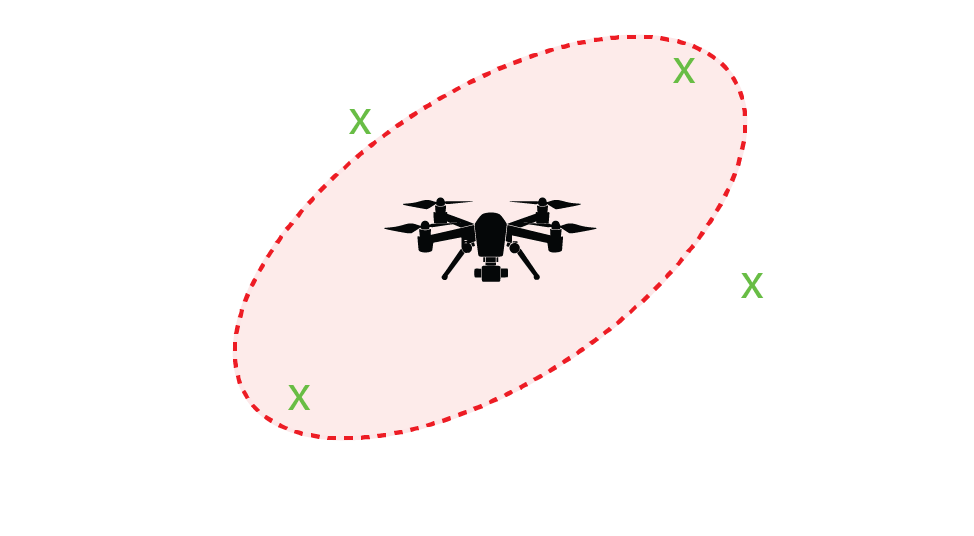
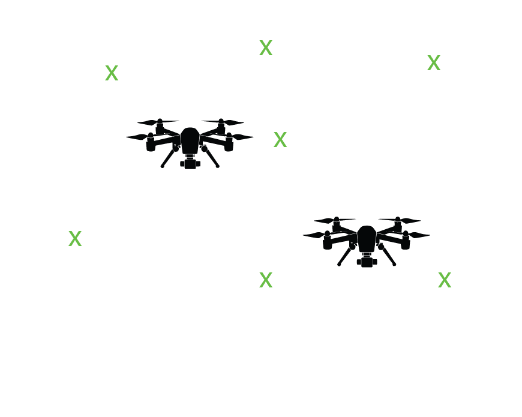
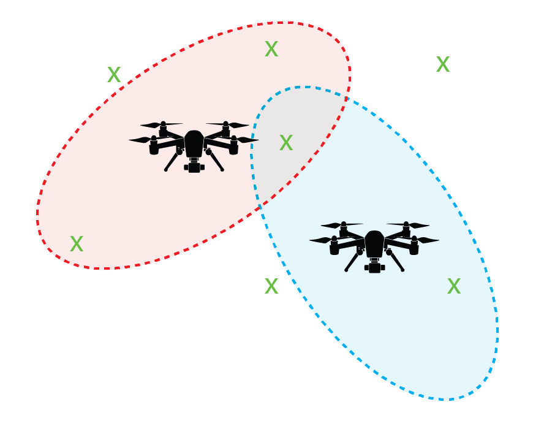

Probabilistic Data Association:
PDAF and JPDAF
SEL5917
Prof. Dr. Marcos Rogério Fernandes
2026
Objectives:
The objectives of this class are:
- Introduce the PDAF: single target tracking;
- Introduce the JPDAF: multi-target tracking;
- Show an example in Matlab;
Introduction to the Association Problem
The problem: measurement-origin uncertainty

Introduction to the Association Problem
The problem: measurement-origin uncertainty

Introduction to the Association Problem
The problem: measurement-origin uncertainty

Introduction to the Association Problem
The problem: measurement-origin uncertainty

The problem: tracking in clutter
- at most one from the target,
- the rest clutter / false alarms,
- the target may be missed ($P_D < 1$).
Approaches:
- Nearest-neighbour — cheap, brittle.
- MHT — defer decisions, costly.
- PDA — soft decision within a scan.
Model and assumptions
Linear-Gaussian target and measurement:
$$ \begin{align} \mathbf{x}_k &= F\mathbf{x}_{k-1} + \mathbf{w}_{k-1},\quad \mathbf{w}_{k-1} \sim \mathcal{N}(\mathbf{0}, Q) \\ \mathbf{y}_k &= H\mathbf{x}_k + \mathbf{v}_k, \quad \mathbf{v}_k \sim \mathcal{N}(\mathbf{0}, R). \end{align} $$
(A2) at most one measurement per target; detection prob. $P_D$;
(A3) target-originated measurement in gate with prob. $P_G$;
(A4) clutter uniform in the gate, Poisson count (density $\lambda$);
(A5) measurements conditionally independent given origin.
Validation gating
Predicted measurement and innovation covariance:
$$ \begin{align} \hat{\mathbf{y}}_{k|k-1} &= H\hat{\mathbf{x}}_{k|k-1}, \\ S_k &= HP_{k|k-1}H^{\trp} + R\\ \boldsymbol{\nu}_j &= \mathbf{y}_j - \hat{\mathbf{y}}_{k|k-1} \end{align} $$
Gate (Mahalanobis test):
$$\boxed{\;\mathcal{G}(\gamma):=\{\boldsymbol{\nu}_j:\boldsymbol{\nu}_j^{\trp} S_k^{-1} \boldsymbol{\nu}_j \le \gamma\}\;}$$
The threshould is $\gamma$ from $\chi^2_{n_y}$ for gate probability $P_G$.
Gate volume: $$V_k = c_{n_y}\,\gamma^{n_y/2}\,|S_k|^{1/2}$$
Validation gating
PDAF: association probabilities
Events: $$ \theta_{j}=\{y_{k,j} \text{ is target-originated}\},\quad \forall j=1,\ldots,m_k\\ \theta_{0}=\{\text{no validated measurements is target-originated}\} $$
Event Posterior Probability:
$$\beta_{j} := \mathbb{P}(\theta_{j} \mid Y^k), \qquad \sum_{j=0}^{m_k} \beta_{j} = 1.$$
PDAF: association probabilities
$$ Y^k:= \{y_{k,1},\ldots,y_{k,m_k}\}\cup Y^{k-1} $$
Accordingly, for $j\neq 0$, $$ \beta_{j} := \mathbb{P}(\theta_{j} \mid Y^k) = \mathbb{P}(\theta_{j} \mid \{y_{k,1},\ldots,y_{k,m_k}\}, m_k, Y^{k-1})\\ = \frac{1}{c}p(\{y_{k,1},\ldots,y_{k,m_k}\} \mid \theta_{j} , m_k, Y^{k-1})\mathbb{P}(\theta_{j}\mid m_k, Y^{k-1})\\ = \frac{1}{c}\underbrace{\frac{\mathcal{N}(y_{k,j};\hat{y}_{k|k-1},S_{k|k-1})}{P_G}}_{\text{Prob. } y_{k,j} \text{ is T.O.}} \underbrace{\Bigl(\frac{1}{V_k}\Bigr)^{m_k-1}}_{\text{Prob. } m_k-1 \text{ clutters}}\mathbb{P}(\theta_{j}\mid m_k, Y^{k-1})\\ $$
PDAF: association probabilities
$$ Y^k:= \{y_{k,1},\ldots,y_{k,m_k}\}\cup Y^{k-1} $$
Accordingly, for $j = 0$, $$ \beta_{0} := \mathbb{P}(\theta_{0} \mid Y^k) = \mathbb{P}(\theta_{0} \mid \{y_{k,1},\ldots,y_{k,m_k}\}, m_k, Y^{k-1})\\ = \frac{1}{c}p(\{y_{k,1},\ldots,y_{k,m_k}\} \mid \theta_{0} , m_k, Y^{k-1})\mathbb{P}(\theta_{0}\mid m_k, Y^{k-1})\\ = \frac{1}{c}\underbrace{\Bigl(\frac{1}{V_k}\Bigr)^{m_k}}_{\text{Prob. } m_k \text{ clutters}}\mathbb{P}(\theta_{0}\mid m_k, Y^{k-1})\\ $$
PDAF: association probabilities
$$ \mathbb{P}(\theta_{j}\mid m_k, Y^{k-1})\propto \begin{cases} P_DP_G \mu_F(m_k-1)\frac{1}{m_k},\quad j\neq 0\\ (1-P_DP_G)\mu_F(m_k),\quad j=0 \end{cases} $$
where $$ \mu_F(\phi)=e^{-\lambda V_k }\frac{(\lambda V_k)^\phi}{\phi!} $$
PDAF: association probabilities
PDAF: association probabilities
$$ \frac{\beta_{j}}{\beta_{0}}= \frac{ P_D \mathcal{N}_j}{(1-P_DP_G)\lambda}=\frac{\mathcal{L}_j(k)}{1-P_DP_G} $$ where $$ \mathcal{L}_j(k):=\frac{\mathcal{N}(y_{k,j};\hat{y}_{k|k-1},S_{k|k-1}) P_D}{\lambda} $$
In addition, as $\sum_{j=0}^{m_k} \beta_{j} =1$, one conclude that $$ \sum_{j=1}^{m_k} \frac{\mathcal{L}_j(k)\beta_{0}}{1-P_DP_G}=1-\beta_{0}\\ \Rightarrow \Bigl(\frac{\sum_j \mathcal{L}_j(k)+(1-P_DP_G)}{1-P_DP_G}\Bigr)\beta_{0}=1 $$PDAF: association probabilities
$$ \frac{\beta_{j}}{\beta_{0}}= \frac{ P_D \mathcal{N}_j}{(1-P_DP_G)\lambda}=\frac{\mathcal{L}_j(k)}{1-P_DP_G} $$ where $$ \mathcal{L}_j(k):=\frac{\mathcal{N}(y_{k,j};\hat{y}_{k|k-1},S_{k|k-1}) P_D}{\lambda} $$
In addition, as $\sum_{j=0}^{m_k} \beta_{j} =1$, one conclude that $$ \sum_{j=1}^{m_k} \frac{\mathcal{L}_j(k)\beta_{0}}{1-P_DP_G}=1-\beta_{0}\\ \Rightarrow \beta_{0}=\frac{1-P_DP_G}{\sum_{j=1}^{m_k} \mathcal{L}_j(k)+(1-P_DP_G)} $$PDAF: association probabilities
$$ \beta_{j}= \frac{\mathcal{L}_j(k)}{1-P_DP_G}\beta_{0}=\frac{\mathcal{L}_j(k)}{1-P_DP_G}\frac{1-P_DP_G}{\sum_{i=1}^{m_k} \mathcal{L}_i(k)+(1-P_DP_G)}\\ \Rightarrow \beta_{j}=\frac{\mathcal{L}_j(k)}{\sum_{i=1}^{m_k} \mathcal{L}_i(k)+(1-P_DP_G)} $$ In conclusion,
$$ \beta_{j}=\begin{cases} \frac{\mathcal{L}_j(k)}{\sum_{i=1}^{m_k} \mathcal{L}_i(k)+(1-P_DP_G)},\quad j\neq 0 \\ \frac{1-P_DP_G}{\sum_{i=1}^{m_k} \mathcal{L}_i(k)+(1-P_DP_G)},\quad j=0 \end{cases} $$
Obs: $$ \beta_{j}=\mathbb{P}(\theta_{j}|Y^k) $$PDAF: state update
So, the posteriori state distribution is a Gaussian Mixture
$$ \boxed{\; p(x_k|Y^k)=\sum_j \beta_{j}p(x_k|\theta_{j},Y^k)} $$
Gaussian Mixture
Moment-matching for Gaussian Mixtures For any mixture $\sum_i w_i\mathcal{N}(\mu_i,\Sigma_i)$ with $\sum_i w_i=1$, the mean and covariance are $$ \mu=\sum_i w_i\mu_i,\\ \Sigma=\sum_i w_i\Bigl[\Sigma_i+(\mu_i-\mu)(\mu_i-\mu)^\trp\Bigr] $$
Thus, $$ \hat{x}_{k|k}=\sum_{j}\beta_{j}\hat{x}_{k|k}^j \\ P_{k|k}=\sum_{j} \beta_{j}\Bigl[P_{k|k}^j+(\hat{x}_{k|k}^j-\hat{x}_{k|k})(\hat{x}_{k|k}^j-\hat{x}_{k|k})^\trp\Bigr] $$Gaussian Mixture
Moment-matching for Gaussian Mixtures For any mixture $\sum_i w_i\mathcal{N}(\mu_i,\Sigma_i)$ with $\sum_i w_i=1$, the mean and covariance are $$ \mu=\sum_i w_i\mu_i,\\ \Sigma=\sum_i w_i\Bigl[\Sigma_i+(\mu_i-\mu)(\mu_i-\mu)^\trp\Bigr] $$
Thus, $$ \hat{x}_{k|k}=\hat{x}_{k|k-1}+K_k\Bigl(\sum_{j}\beta_{j}(y_{k,j}-\hat{y}_{k|k-1})\Bigr) \\ P_{k|k}=\sum_{j} \beta_{j}\Bigl[P_{k|k}^j+(\hat{x}_{k|k}^j-\hat{x}_{k|k})(\hat{x}_{k|k}^j-\hat{x}_{k|k})^\trp\Bigr] $$PDAF: state update via the combined innovation
$$\boldsymbol{\nu}_k = \sum_{j=1}^{m_k} \beta_{j}\,\boldsymbol{\nu}_{k,j} $$
Obs: A single, probability-weighted, innovation replaces the choice of one measurement: each validated $\mathbf{y}_j$ pulls the estimate in proportion to $\beta_{j}$, how likely it is to be the target.
PDAF: covariance and the spread of the innovations
The covariance must also reflect uncertainty about which measurement was correct:
$$ \begin{align} P_{k|k} &= \underbrace{\beta_{0}P_{k|k-1}}_{\text{no T.O.}} + \underbrace{(1-\beta_{0})P_k^{c}}_{\text{correct assoc.}} + \underbrace{\tilde{P}_k}_{\text{spread}}\\ P_k^{c} &= (I - K_kH)P_{k|k-1}\\ \tilde{P}_k &= K_k\!\Big[\textstyle\sum_{j=1}^{m_k} \beta_{j}\boldsymbol{\nu}_{k,j}\boldsymbol{\nu}_{k,j}^{\trp} - \boldsymbol{\nu}_k\boldsymbol{\nu}_k^{\trp}\Big]K_k^{\trp} \succeq 0. \end{align} $$
PDAF: one recursive cycle
Why joint association? Contested measurements
With several targets whose gates overlap, a measurement in the overlap could belong to either target.
Two independent PDAFs would let both claim it ⇒ bias, track coalescence.
JPDAF: score association events jointly; one measurement feeds at most one target.
JPDAF: validation gate
(R2) $\le 1$ measurement per target.
Validation matrix: ($m_k$ valid measurements and $T$ targets) $$\omega_{jt}=\begin{cases} 1,\quad \text{if } y_{k,j}\in\mathcal{G}_t,\quad t\ge 1\\ 0,\quad \text{otherwise} \\ \end{cases}\\ 1\le j \le m_k \\ 0\le t \le T $$
JPDAF: validation gate
(R2) $\le 1$ measurement per target.
Validation matrix: ($m_k$ valid measurements and $T$ targets) $$\Omega = [\omega_{jt}] = \begin{bmatrix} \omega_{10} & \omega_{11} & \cdots & \omega_{1T}\\ \omega_{20} & \omega_{21} & \cdots & \omega_{2T}\\ \vdots & \vdots & \ddots & \vdots \\ \omega_{m_k0} & \omega_{m_k1} & \cdots & \omega_{m_kT}\\ \end{bmatrix}$$
Validation gate: example
Validation gate: example
JPDAF: feasible joint events
$$ \chi := \cap_{j=1}^m \chi_{jt_j} $$
where $ \chi_{jt_j} $ is the event of measurement $j$ originated from target $t_j$. $$ 0\le t_j \le T $$ Measurement association indicator: $$ \tau_j(\chi) := \begin{cases} 1, \quad \text{if } t_j > 1\\ 0, \quad \text{if } t_j = 0 \end{cases} $$JPDAF: feasible joint events
$$ \chi := \cap_{j=1}^m \chi_{jt_j} $$
where $ \chi_{jt_j} $ is the event of measurement $j$ originated from target $t_j$. $$ 0\le t_j \le T $$ Target association indicator: $$ \delta_t(\chi) := \begin{cases} 1, \quad \text{if } t_j = t \text{ for some } j\\ 0, \quad \text{if } t_j \neq t \text{ for all } j \end{cases} $$JPDAF: feasible joint events
Feasible Event Matrix: $$ \Theta(\chi) = [\theta_{jt}] = \begin{bmatrix} \theta_{10} & \theta_{11} & \cdots & \theta_{1T}\\ \theta_{20} & \theta_{21} & \cdots & \theta_{2T}\\ \vdots & \vdots & \ddots & \vdots \\ \theta_{m_k0} & \theta_{m_k1} & \cdots & \theta_{m_kT}\\ \end{bmatrix} $$
JPDAF: feasible joint events
Measurement association indicator: $$ \tau_j(\chi) = \sum_{t=1}^T \theta_{jt} $$
Target association indicator: $$ \delta_t(\chi) = \sum_{j=1}^{m_k} \theta_{jt} $$
JPDAF: feasible joint events
JPDAF: feasible joint events
JPDAF: feasible joint events
JPDAF: feasible joint events
JPDAF: association probabilities
Events: $$ \chi_{jt_j}=\{y_{k,j} \text{ is originated from target }t_j\},\quad \forall j=1,\ldots,m_k $$
Marginal Event Posterior Probability:
$$\beta_{jt} := \mathbb{P}( \chi_{jt_j} \mid Y^k), \qquad \sum_{j=0}^{m_k} \beta_{jt} = 1.$$
JPDAF: association probabilities
Feasible Joint Event: $$ \chi=\cap_{j=1}^{m_k}\chi_{jt_j} $$
Joint Event Posterior Probability:
$$ \mathbb{P}( \chi \mid Y^k)=\mathbb{P}( \chi \mid \{y_{k,1},\ldots,y_{k,m_k}\},m_k,Y^{k-1})\\ =\frac{1}{c}p(\{y_{k,1},\ldots,y_{k,m_k}\} \mid \chi ,m_k,Y^{k-1})\mathbb{P}( \chi \mid m_k,Y^{k-1})\\ =\frac{1}{c}\prod_{j=1}^{m_k} p(y_{k,j}|\chi_{jt_j},m_k,Y^{k-1})\mathbb{P}( \chi \mid m_k,Y^{k-1}) $$
JPDAF: association probabilities
Joint Event Posterior Probability:
$$ \mathbb{P}( \chi \mid Y^k)=\frac{1}{c}\prod_{j=1}^{m_k} p(y_{k,j}|\chi_{jt_j},m_k,Y^{k-1})\mathbb{P}( \chi \mid m_k,Y^{k-1}) $$
- Measurements associated with a target are Gaussian Distributed: $$ t_j>0 : p(y_{k,j}|\chi_{jt_j},m_k,Y^{k-1})=\mathcal{N}(y_{k,j};\hat{y}_{k|k-1}^{t_j},S_{k|k-1}^{t_j}) $$
- Measurements associated with clutter are Uniform Distributed: $$ t_j=0 : p(y_{k,j}|\chi_{jt_j},m_k,Y^{k-1})=\frac{1}{V_k} $$
JPDAF: association probabilities
Joint Event Posterior Probability:
$$ \mathbb{P}( \chi \mid Y^k)=\frac{1}{c}\prod_{j=1}^{m_k} p(y_{k,j}|\chi_{jt_j},m_k,Y^{k-1})\mathbb{P}( \chi \mid m_k,Y^{k-1}) $$
The Likelihood distribution conditioned with an association Event is
$$ p(y_{k,j}|\chi_{jt_j},m_k,Y^{k-1})=\begin{cases} \mathcal{N}(y_{k,j};\hat{y}_{k|k-1}^{t_j},S_{k|k-1}^{t_j}),\quad \text{if }\tau_j(\chi)=1\\ V_k^{-1},\quad \text{if } \tau_j(\chi)=0 \end{cases} $$
JPDAF: association probabilities
Joint Event Prior Probability:
$$ \mathbb{P}( \chi \mid m_k,Y^{k-1})=? $$
Note that the number of false measurements in $\chi$ is
$$ \phi(\chi)=\sum_{j=1}^{m_k}[1-\tau_j(\chi)] $$
Given $\phi(\chi)=\phi$ it will exists many $\chi$ (equally likely) that may have the same number of detected targets: $$ P_{m_k-\phi}^{m_k} = \frac{m_k!}{\phi!} $$JPDAF: association probabilities
Joint Event Prior Probability:
$$ \mathbb{P}( \chi \mid m_k,Y^{k-1})=\mathbb{P}( \cap_{j=1}^{m_k}\chi_{jt_j} \mid m_k,Y^{k-1})\\ =\prod_{j=1}^{m_k}\mathbb{P}( \chi_{jt_j} \mid m_k,Y^{k-1})\\ =\underbrace{\mu_F(\phi)\prod_{t:\delta_t=0}(1-P_D^tP_G^t)}_{\text{Prob. of } \phi \text{ false meas.}}\underbrace{\prod_{t:\delta_t=1}P_D^tP_G^t\frac{1}{P_{m_k-\phi}^{m_k}}}_{\text{Prob. of } m_k-\phi \text{ detect.}} $$
where $$ \mu_F(\phi)=e^{-\lambda V_k }\frac{(\lambda V_k)^\phi}{\phi!} $$JPDAF: association probabilities
Joint Event Posterior Probability:
$$ \mathbb{P}( \chi \mid Y^k)=\frac{1}{c}\prod_{j=1}^{m_k} p(y_{k,j}|\chi_{jt_j},m_k,Y^{k-1})\mathbb{P}( \chi \mid m_k,Y^{k-1})\\ =\frac{1}{c}\underbrace{\prod_{j:\tau_j=1}\frac{\mathcal{N}_j^{t_j}}{P_G^t}}_{\text{Prob. T.O.}}\underbrace{V_k^{-\phi}}_{\text{Prob. no T.O.}}\underbrace{\mu_F(\phi)\prod_{t:\delta_t=0}(1-P_D^tP_G^t)}_{\text{Prob. of } \phi \text{ false meas.}}\underbrace{\prod_{t:\delta_t=1}P_D^tP_G^t\frac{\phi!}{m_k!}}_{\text{Prob. of } m_k-\phi \text{ detect.}} $$
Obs: T.O. is Target Originated acronym. $$ \mathcal{N}_j^t=\mathcal{N}(y_{k,j};\hat{y}_{k|k-1}^{t},S_{k|k-1}^{t}) $$
JPDAF: association probabilities
Joint Event Posterior Probability:
$$ \mathbb{P}( \chi \mid Y^k)=\frac{1}{c}\prod_{j:\tau_j=1}\frac{\mathcal{N}_j^{t_j}}{P_G^t}V_k^{-\phi}e^{-\lambda V_k }\frac{(\lambda V_k)^\phi}{\phi!}\prod_{t:\delta_t=0}(1-P_D^tP_G^t)\prod_{t:\delta_t=1}P_D^tP_G^t\frac{\phi!}{m_k!}\\ =\frac{e^{-\lambda V_k }(\lambda)^\phi}{m_k!c}\prod_{j:\tau_j=1}\frac{\mathcal{N}_j^{t_j}}{P_G^t}\prod_{t:\delta_t=0}(1-P_D^tP_G^t)\prod_{t:\delta_t=1}P_D^tP_G^t\\ =\frac{(\lambda)^\phi}{\tilde{c}}\prod_{j:\tau_j=1}\frac{\mathcal{N}_j^{t_j}}{P_G^t}\prod_{t:\delta_t=0}(1-P_D^tP_G^t)\prod_{t:\delta_t=1}P_D^tP_G^t\\ $$
JPDAF: association probabilities
Joint Event Posterior Probability:
$$ \mathbb{P}( \chi \mid Y^k)=\frac{(\lambda)^\phi}{\tilde{c}}\prod_{j:\tau_j=1}\frac{\mathcal{N}_j^{t_j}}{P_G^t}\prod_{t:\delta_t=0}(1-P_D^tP_G^t)\prod_{t:\delta_t=1}P_D^tP_G^t\\ $$
Finally, the marginal event posterior is$$ \beta_{jt}=\sum_{\chi} \mathbb{P}( \chi \mid Y^k)\theta_{jt},\quad \forall j=1,\ldots,m_k; t=0,\ldots,T\\ \beta_{0t}=1-\sum_{j=1}^{m_k} \beta_{jt}\quad \forall t=0,\ldots,T $$
PDAF: state update
So, the posteriori state distribution is a Gaussian Mixture
$$ \boxed{\; p(x_k^t|Y^k)=\sum_j \beta_{jt}p(x_k^t|\chi_{jt},Y^k)} $$
Gaussian Mixture
Moment-matching for Gaussian Mixtures For any mixture $\sum_i w_i\mathcal{N}(\mu_i,\Sigma_i)$ with $\sum_i w_i=1$, the mean and covariance are $$ \mu=\sum_i w_i\mu_i,\\ \Sigma=\sum_i w_i\Bigl[\Sigma_i+(\mu_i-\mu)(\mu_i-\mu)^\trp\Bigr] $$
Thus, $$ \hat{x}_{k|k}^t=\sum_{j}\beta_{jt}\hat{x}_{k|k}^{jt} \\ P_{k|k}^t=\sum_{j} \beta_{jt}\Bigl[P_{k|k}^{jt}+(\hat{x}_{k|k}^{jt}-\hat{x}_{k|k}^t)(\hat{x}_{k|k}^{jt}-\hat{x}_{k|k}^t)^\trp\Bigr] $$Gaussian Mixture
Moment-matching for Gaussian Mixtures For any mixture $\sum_i w_i\mathcal{N}(\mu_i,\Sigma_i)$ with $\sum_i w_i=1$, the mean and covariance are $$ \mu=\sum_i w_i\mu_i,\\ \Sigma=\sum_i w_i\Bigl[\Sigma_i+(\mu_i-\mu)(\mu_i-\mu)^\trp\Bigr] $$
Thus, $$ \hat{x}_{k|k}^t=\hat{x}_{k|k-1}^t+K_k^t\Bigl(\sum_{j}\beta_{jt}(y_{k,j}-\hat{y}_{k|k-1}^t)\Bigr) \\ P_{k|k}^t=\sum_{j} \beta_{jt}\Bigl[P_{k|k}^{jt}+(\hat{x}_{k|k}^{jt}-\hat{x}_{k|k}^t)(\hat{x}_{k|k}^{jt}-\hat{x}_{k|k}^t)^\trp\Bigr] $$JPDAF: target state update
$$ \begin{align} \nu_{jt}&=y_{k,j}-\hat{y}_{k|k-1}^t\\ \nu_k^t &= \sum_{j}\beta_{jt}\nu_{jt}\\ \hat{x}_{k|k}^t&=\hat{x}_{k|k-1}^t+K_k^t\nu^t_k \\ P_{k|k}^t&=\beta_{0t}P_{k|k-1}^t+(1-\beta_{0t})P_{k|k}^{t,c}+\tilde{P}^t_k\\ P_k^{t,c} &= (I - K_k^tH)P_{k|k-1}^t\\ \tilde{P}_k^t &= K_k^t\!\Big[\textstyle\sum_{j=1}^{m_k} \beta_{jt}\boldsymbol{\nu}_{jt}(\boldsymbol{\nu}_{jt})^\trp - \boldsymbol{\nu}_k^t(\boldsymbol{\nu}_k^t)^{\trp}\Big]K_k^{\trp} \succeq 0 \end{align}\\ \forall t=0,\ldots, T $$
Conclusions
- PDA turns a hard discrete choice into a soft probabilistic weighting.
- PDAF: gate → weights $\beta_i$ → combined innovation → update with an inflated (spread-of-innovations) covariance.
- JPDAF: enumerate feasible joint events, marginalize to $\beta_{jt}$, then update each target by the PDAF equations — correctly sharing contested measurements.
- Practical backbone of tracking in clutter; typically deployed inside an IMM.
References
- Y. Bar-Shalom, E. Tse, “Tracking in a cluttered environment with probabilistic data association,” Automatica, 1975.
- T. Fortmann, Y. Bar-Shalom, M. Scheffe, “Sonar tracking of multiple targets using joint probabilistic data association,” IEEE J. Oceanic Eng., 1983.
- Y. Bar-Shalom, T. Fortmann, Tracking and Data Association, Academic Press, 1988.
- Y. Bar-Shalom, F. Daum, J. Huang, “The probabilistic data association filter,” IEEE Control Systems Magazine, 2009.
- Y. Bar-Shalom, X. R. Li, T. Kirubarajan, Estimation with Applications to Tracking and Navigation, Wiley, 2001.